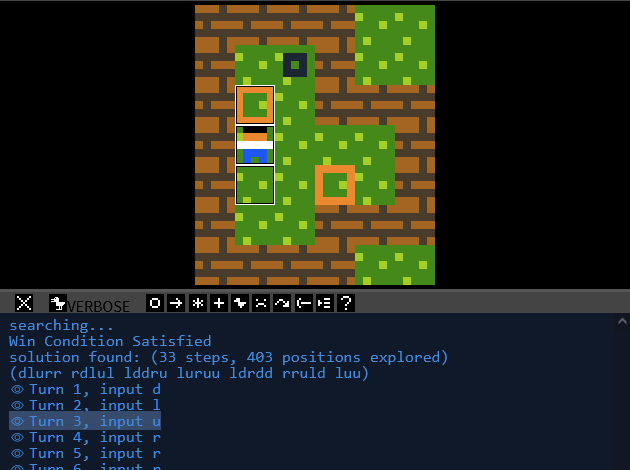

- Documentation
- Solver
How to use the Solver 
To try to automatically solve a level, load it and click on Solve at the top bar, or hit F9. The solver will attempt to solve the puzzle, starting from the current state, not the starting state (so you can already partially pre-solve it if you want to). It will conclude that the puzzle is solvable when the puzzle is won (either through win conditions or the win command) or when a checkpoint command activates.
To cancel the solver, click on Stop Solver or hit F8 or ESC.
If a solution is found, it will be placed on the message log, along with previews from the visual debugger so you can preview each turn of the solution individually. Do note that this is not necessarily the shortest solution—but it does prove that the puzzle is winnable.

In case the solver runs out of states to check without finding a solution, it will stop and conclude the puzzle is unsolvable.
When to use the Solver
The solver works best when the levels are relatively small, and the winning conditions are of the form
all X on Y,
no X or
no X on Y.
Improving solver performance
If the solver takes a long time to find a solution, you can attempt the following to speed it up:
- Does your game have any "dead" states after which the level becomes unwinnable? Consider making that explicit by attempting to detect it using rules, and removing the player in cases like that, to avoid the solver from being stuck too long in a state of which you already know is unwinnable.
- Are you not using the action input in your game? Consider adding noaction to the prelude. The solver automatically detects this flag, and removes action from the directions/inputs it has to test for each turn, making it faster.
- The solver scores the various states, judging by how many of the win conditions are met. If possible, consider not using the win command. Instead, add more specific win conditions, this allows the solver to prioritize exploring states that already have some of the win conditions met.
- Disable any visual effects in your level. The solver is smart enough to prevent exploring states it has already visited. But this only works when the entire level state are completely identical to each other. If you have a lot of visual effects on your level, consider diabling them to improve this duplicate state detection.
- If you are still experiencing long waiting times, as a last resort you could cut out a part of a larger level and test that smaller part of it. Solving time increases exponentially the bigger the level is & the more rules you have, so make it as small as you can.
The solver ignores special commands like
goto and such, so don't worry too much about those. Note that the solver does not work together with some features, most notably mouse input.
Documentation page adapted from Puzzlescript Solver docs by Marcosdon
 PuzzleScript
PuzzleScript